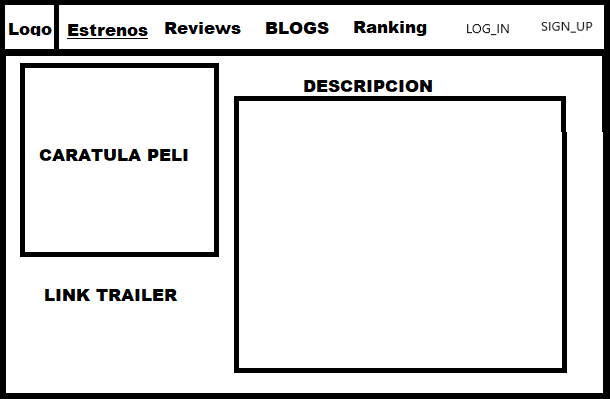
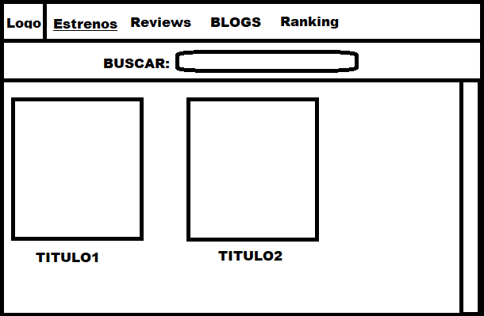
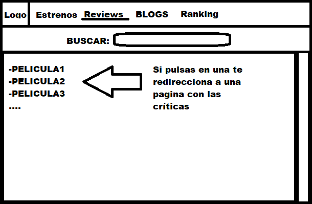
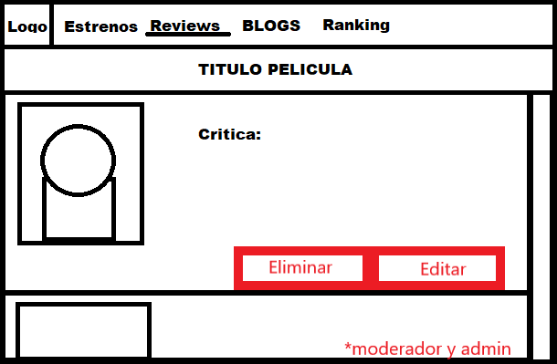
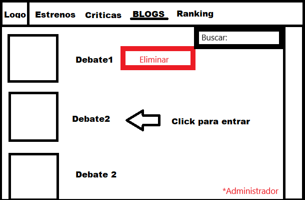
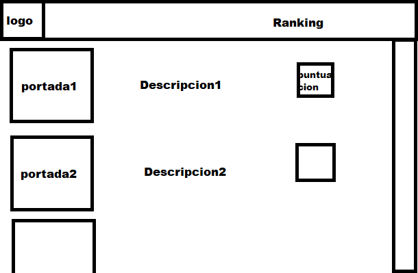

En esta página podemos ver un esquema de la aplicación web. Contamos con una barra de control donde podremos seleccionar entre las 4 distintas funcionalidades de la aplicación (Blog, Ranking, Estrenos y Criticas).

Como podemos ver, en la página de Estrenos tenemos una barra de búsqueda para buscar películas y una sección de resultados que tiene un contenido por defecto que está por determinar.
- Peliculas

Tras hacer clic en una película, el usuario es redirigido a la página de la película, descrita en el esquema anterior.

Esta página tiene un aspecto similar a la de Estrenos, pero su finalidad es distinta. De hecho, permite al usuario buscar una película, pero en lugar de enviar al usuario a la página de descripción de la película, envía al usuario a la página que agrupa todas las críticas sobre esa película.
- Pagina de criticas de una película
En esta página, vemos el título de la película seguido de todas las críticas asociadas a esa película.

En la página inicial del Blog podemos ver una lista de los últimos temas de debate tratados en nuestro foro con etiquetas y una breve descripción de cada uno para que los usuarios puedan encontrar fácilmente los que les interesan.

En la página de Ranking, podemos ver una lista de las películas ás votadas en su categoría. El usuario podrá elegir los parámetros que prefiera para ordenar este ranking.